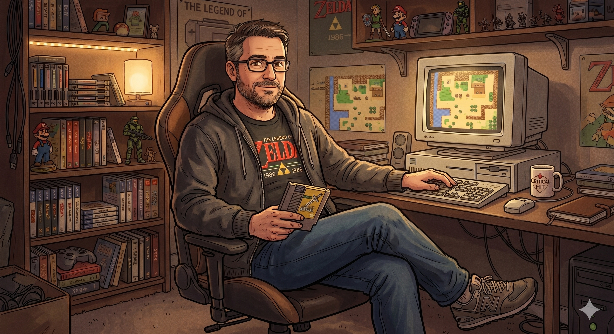

Appears in: Couch Potato Chaos, Couch Potato Crisis
Profile

- Appears in: Couch Potato Chaos, Couch Potato Crisis
- Aliases: Jak, the fifth Player
- Cross-book continuity: Posthumous presence in both books; active voice through diary excerpts in Crisis.
- Role: Tasha’s deceased father, a lifelong gamer whose secret history as the fifth Player in Etheria sets the entire Couch Potato Chronicles in motion. Though dead before the story begins, his legacy, his package, and his diary are the connective tissue between Earth and Etheria — and between the series’ past and present.
- Personality: Jak was, above all, a gamer — someone who lived for virtual worlds, strategy, and the quiet satisfaction of mastering a system. His daughter Tasha inherited both his love of games and his career path, becoming a game developer herself. Where Tasha turned that passion into a profession (and then into burnout under an exploitative boss), Jak kept his devotion to gaming closer to the hobbyist’s pure enthusiasm. He was warm, imaginative, and quietly adventurous — the kind of father who would leave behind something extraordinary without ever boasting about it. His relationship with Tasha was close and formative: he passed on not just the Couch Potato temperament but the specific analytical mindset that would later let Tasha programme spells in Etheria as though writing code. Jak kept his Etherian history a secret from Tasha during his life, suggesting either a desire to protect her from the truth or an acceptance that his chapter in Etheria was closed. His diary entries, discovered after his death, reveal a man who approached Etheria with the same wonder and systematic curiosity that his daughter would later bring to it — but also someone who witnessed horrors and made difficult choices that he chose to record rather than forget.
- Backstory: Before his death, Jak Singleton was an ordinary man — a gamer and father living on Earth. Unbeknownst to his daughter Tasha, he had secretly been transported to Etheria as the fifth Player, one of the rare humans from outside the world chosen (or drawn) to enter it. During his time in Etheria, Jak explored the world’s systems, encountered its peoples, and witnessed events that would shape the political landscape Tasha later inherits. His diary, discovered in Crisis, records the origins of the game cartridge that serves as the gateway between worlds, earlier Etherian history that the present-day characters have only partial access to, and the rise of Zhakara — documenting how the kingdom evolved into the slave-taking empire that defines the antagonism of both books. Jak’s time as the fifth Player ended in his death in Etheria, though the circumstances are revealed primarily through his own writings. He returned to Earth (or perhaps never fully returned) carrying knowledge he recorded in his diary but shared with no one. Before dying, he left behind a package — a game cartridge or similar artifact — that eventually connected Tasha to Catalyst, the eidolon of change, and triggered her transport into Etheria as the next Player.
- Significant story events:
- Pre-story (Earth): Jak lives as a gamer and father to Tasha. At some point he enters Etheria as the fifth Player, experiences the world, witnesses the rise of Zhakara, and records everything in his diary. He dies before the story begins, leaving behind a package addressed to Tasha.
- Chapter 2 — The Inverted Clock (Chaos): Jak’s package reaches Tasha after his death. The game cartridge inside it is the conduit through which Catalyst eventually contacts her. His presence is felt here as the invisible hand that sets the story in motion.
- Chapter 20 — [Brightwind Keep](./location-brightwind-keep.html) (Chaos): Jak’s history as an earlier Player is strongly implied when Tasha learns about the Player lineage. She begins to understand that her connection to Etheria is not random — it is inherited.
- Beachhead (Crisis): References to Jak’s legacy surface as Tasha and her allies prepare for the deeper strike into Zhakara, connecting the current campaign to the history Jak recorded.
- Devil’s Bargain (Crisis): The political history Jak documented — particularly the rise of Zhakara and its transformation into a slave empire — provides crucial context for understanding Murderjoy’s regime and the foundations of the conflict.
- The Fifth Player (Crisis): The centrepiece of Jak’s posthumous character arc. Tasha reads Jak’s diary excerpts, which explain the game cartridge’s origin, earlier Etherian history, and how the world she is fighting through was shaped by events Jak witnessed first-hand. His diary fills in the gaps that the present-day characters could not have known: the political origins of Zhakara, the early Player incursions, and the deeper history of the world’s systems.
- The Final Summon (Crisis): Jak’s legacy echoes into the final battle. The knowledge he preserved in his diary contributes to the party’s understanding of the forces they face, and his role as the fifth Player is explicitly framed as part of the lineage that includes Tasha.
- Notable Quotes:
[Jak’s diary entries are the primary source of his voice in the series. Specific quoted excerpts appear in the Crisis chapter The Fifth Player, where Tasha reads his account of Etherian history. The wiki’s Notable Quotes section does not individually attribute Jak’s diary lines, but his most defining contribution is the diary itself — a first-person historical record of the world’s origins and the rise of Zhakara, written in the voice of a gamer documenting a world that fascinated and horrified him in equal measure.]
The diary excerpts serve as both exposition and characterisation: they reveal Jak’s systematic curiosity, his wonder at Etheria’s game-like systems, and his quiet horror at the atrocities he witnessed — particularly the industrialisation of slavery that would define Zhakara.
- Relationships:
- [Tasha Singleton](./character-tasha-singleton.html) (daughter): The defining relationship of Jak’s life. He passed on his love of gaming, his analytical mind, and — unknowingly, from Tasha’s perspective — his Player legacy. Tasha discovers through his diary that the father she thought she knew had an entire secret history. Her growth across both books is shaped by the inheritance he left behind: the game cartridge, the Player status, and the knowledge preserved in his writing.
- Catalyst (eidolon): Jak’s package connected Tasha to Catalyst, the eidolon of change. Whether Jak himself interacted with Catalyst during his time as the fifth Player is likely but not confirmed. His legacy serves as the bridge between Catalyst’s offer and Tasha’s acceptance.
- The Player lineage: As the fifth Player, Jak is part of the sequence of humans from outside Etheria who have entered and altered the world. His contributions — particularly his documentation of Zhakaran history — echo into the present narrative.
- [Queen [Aralynn Murderjoy](./character-queen-aralynn-murderjoy.html)](./character-queen-aralynn-murderjoy.html) / Zhakara (historical witness): Jak’s diary records the rise of Zhakara, making him a posthumous witness to the very empire Tasha fights against. His documentation of how Zhakara became a slave-taking nation provides intelligence and context that the present-day characters lack from any other source.
- References: Couch Potato Chaos: Chapter 2 - The Inverted Clock, Chapter 20 - [Brightwind Keep](./location-brightwind-keep.html), Characters | Couch Potato Crisis: Beachhead, Devil’s Bargain, The Fifth Player, The Final Summon